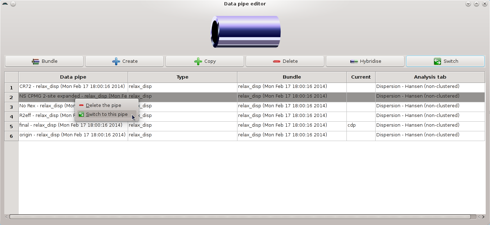

Next: Dispersion GUI mode - Up: The relaxation dispersion auto-analysis Previous: Dispersion GUI mode - Contents Index
To compare the results of the different optimised models, the pipe editor window can be used to switch between the data pipes containing the results of the individual models. Select the ``View→Data pipe editor'' menu entry. Right click on the model of interest and select ``Switch to this pipe'':
|

|
The results viewer window can then be used to open the text files and Grace plots for that model. Switch to the data pipe of another model and open the same file to compare the results.